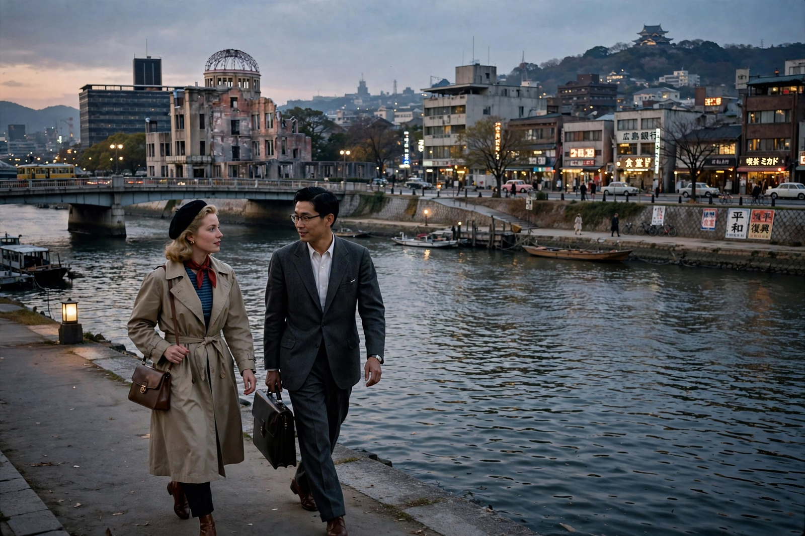

| Hiroshima mon amour | |
|---|---|
 A love affair framed by the memory of war | |
| Directed by | Alain Resnais |
| Screenplay | Marguerite Duras |
| Starring | Emmanuelle Riva, Eiji Okada |
| Release date | 10 June 1959 (France) |
| Running time | 90 minutes |
| Countries / Languages | France, Japan / French, Japanese |
Hiroshima mon amour (French pronunciation: [iʁoʃima mɔ̃n amuʁ], "Hiroshima, My Love") is a 1959 French New Wave romantic drama film directed by Alain Resnais from a screenplay by Marguerite Duras. It follows a brief affair between a French actress and a Japanese architect in postwar Hiroshima, using non-linear flashbacks and poetic dialogue to explore memory, trauma, and forgetting.
Elle (Emmanuelle Riva), a French actress in Hiroshima to make a film about peace, spends her last night with Lui (Eiji Okada), a Japanese architect whose family was killed by the atomic bomb while he fought in the war. Over 36 hours of conversation, her lover's questions draw out her buried memory of Nevers, where during the Occupation she loved a German soldier, was shaved and shamed at the Liberation, and locked in a cellar by her parents. The film opens with the famous exchange — "You saw nothing at Hiroshima. Nothing." / "I saw everything. Everything." — setting its meditation on the impossibility of witnessing another's trauma.
Shown out of competition at Cannes in 1959 to avoid offending American sensibilities, the film was a sensation and is considered a founding work of the French New Wave alongside The 400 Blows. Duras's screenplay was nominated for an Academy Award, and the film's interweaving of personal memory and historical catastrophe profoundly influenced modern cinema.